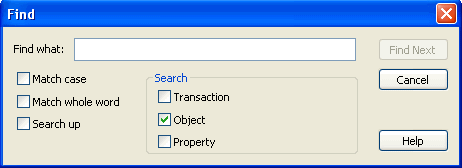

The Action Log Find dialog lets you search for specific text at the transaction level, object level, or property level. This option is available on both the Details and Summary panes.

By default, the search includes the entire tree, starting from the current selection point. If there is no current selection point, then the top of the tree is used as the starting point. If the search did not start at the top node, the search wraps to the beginning of the tree after reaching the end.
To locate text using the Find feature
The Find dialog opens.
Since there are no transaction nodes in the Summary pane, the Transaction search option is not applicable to that pane.
Specifies to search on case-sensitive text.
Specifies to search for the entire text string.
Specifies to search for the text from the bottom up.
The next occurrence of text displays.
The Find dialog closes.